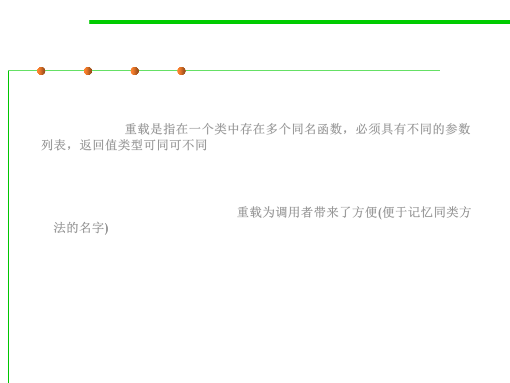

Overloading 重载
3.4 Object-Oriented Programming (OOP)
▪ Overloaded methods let you reuse the same method name in a
class, but with different arguments (and optionally, a different
return type). 重载是指在一个类中存在多个同名函数，必须具有不同的参数
列表，返回值类型可同可不同
– Overloading a method often means you‘re being a little nicer to those who
call your methods, because your code takes on the burden of coping with
different argument types rather than forcing the caller to do conversions
prior to invoking your method. 重载为调用者带来了方便(便于记忆同类方
法的名字)
▪ A method Print(object O):one might like the method to be
different when printing, for example, text or pictures.
– Two different methods may be overloaded as Print(text_object T);
Print(image_object P).
– If we write the overloaded print methods for all objects our program will
"print", we never have to worry about the type of the object, and the
correct function call again, the call is always: Print(something).